学ぶ
- ChatGPT / Claude 活用の教育・
研修 「触ったことはあるけど、仕事に使えていない」社長・社員の方へ。
御社の実際の業務を題材に、明日から使える活かし方をお伝えします。 - AI開発ツール活用の教育・
研修（Claude Code / Codex） 社内の面倒な仕事を1つ選び、AI社員として一緒に作ります。
作った後も、自分たちで直せる形で引き渡します。
AIで、事業や業務のやり方を本気で変えたい経営者・事業責任者の方へ。
経営と現場の両方を知る目線で「本当に使われる」AIを設計し、少ない人数で生産性を上げる会社をつくります。
AIは作業を、判断は人が持つ。
無料相談する「触ったことはあるけど、仕事に使えていない」社長・社員の方へ。
御社の実際の業務を題材に、明日から使える活かし方をお伝えします。
社内の面倒な仕事を1つ選び、AI社員として一緒に作ります。
作った後も、自分たちで直せる形で引き渡します。
AI社員を採用して、育てる
秘書AI・リサーチャーAIなど、すでに動いている型から導入。
御社の業務に合わせて調整します。
ベテランの頭の中にある判断基準を聞き取り、AI社員に移します。
人が辞めても、ノウハウが会社に残ります。
② 育てる（月額顧問）
最終的な判断は、いつも経営者・責任者の方。MARQIAは、その判断を支える人事部長代行です。
決まったAI社員だけでなく、御社の業務に合わせたAI社員もつくります。業務のヒアリングから、採用・試用・育成までの流れをご紹介します。
就職活動中のAI社員です。仕事を覚えるほど、任せられる範囲が広がります。
判断するのは人です。

※ここでの「社長」は、AI社員を導入される御社の社長、または部署の責任者の方のことです。
| 役職 | AI社員の働き方 | 社長がやること |
|---|---|---|
| 新人 | 社長が指示 → AIが作業 → 社長が確認 | 毎回指示して確認する |
| 主任 | 手順を覚え、AIが下書きする | 「OK」を出すだけ |
| 課長 | 決まった時間に自分で動き、結果を報告する | 報告を読むだけ |
| 部長 | 複数のAI社員が、仕事を受け渡しながら回す | 月に1回、方針を出すだけ |
昇進させるのは、MARQIA（人事部長代行）の仕事。AIが勝手に変わるのではなく、手順・つなぎ先・任せる範囲・動くタイミング・報告のしかたを、1段ずつ整えていきます。
送信・支払い・契約などの最終判断は、どの役職でも社長が行います。
お使いのAIに合わせて、働き方を選べます。どちらも、送信は必ず社長の確認後。勝手に送ることはありません。
就職活動中
PC版（Claude）
主任
PCで起動して、受信メールへの返信の下書きを作ります。
Claudeをお使いの会社向け。
就職活動中
スマホ版（ChatGPT）
課長
いつも待機していて、先回りで教えてくれる秘書です。
ChatGPTの有料プランと、Gmail・Googleカレンダーをお使いの会社向け。
※AIサービスの利用料（ChatGPTやClaudeの有料プランの料金）は、御社からAI会社へ直接お支払いいただくもので、MARQIAの料金とは別です。
就職活動中
新人
担当：競合調査
就職活動中
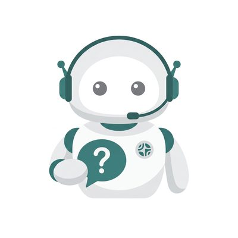
新人
担当：お客様からの問い合わせ対応
就職活動中
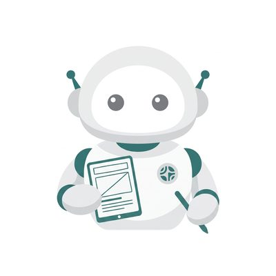
新人
担当：告知・採用・キャンペーンのページ制作
このページもWEBデザイナーAIが制作しました
就職活動中
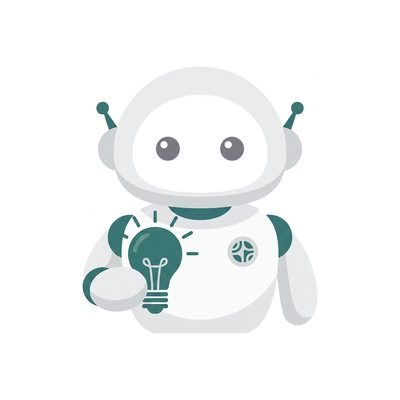
新人
担当：新しい事業のアイデア判定
就職活動中
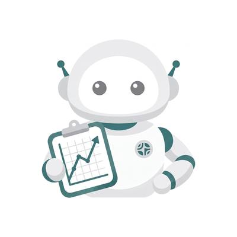
新人
担当：事業計画書と収支シミュレーション
就職活動中
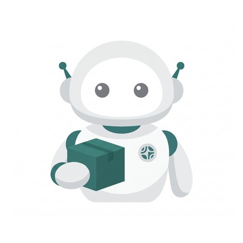
新人
担当：在庫のチェックと発注の準備
就職活動中
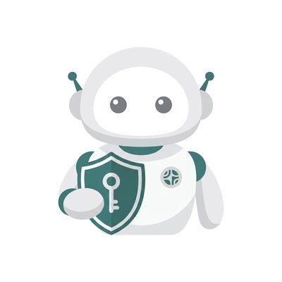
新人
担当：公開前・導入前の点検
就職活動中
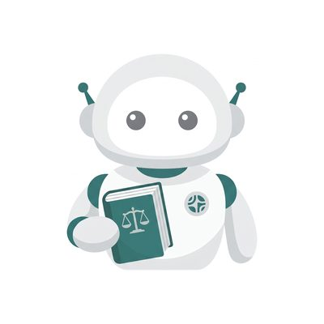
新人
担当：契約書の一次チェック
就職活動中
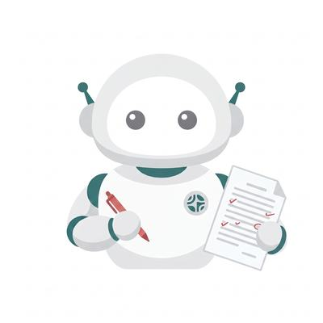
新人
担当：出す前の文書チェック
アイデアの判定から、計画づくり・資金集めまで。
アイデア判定AIと事業計画AIの2体で担当します。まず計画づくりから入社し、手前の段階を順に覚えていきます。事業計画AIは、元ベンチャーキャピタリストである代表が、実際の資金調達の現場で作ってきた計画書の型を引き継いでいます。
0
アイデア判定AI
筋のいいアイデアかを見極める
就職活動中
新人
1
事業計画AI
お客さんの困りごとが本物か、聞き取りの設計と結果の整理
主任で習得
2
事業計画AI
小さく試す計画と、成功の目安づくり
主任で習得
3
事業計画AI
継続率・解約・顧客1人あたりの収支で判定
課長で習得
4
事業計画AI
事業計画書・収支Excel・採用計画・補助金・融資・資本政策
就職活動中
新人
就職活動準備中
ショート動画制作担当
就職活動準備中
SNSマーケティング担当
就職活動準備中
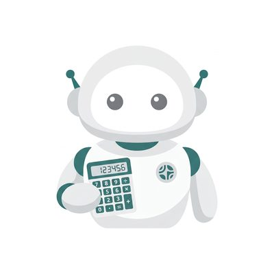
経理担当
就職活動準備中
システム開発担当
就職活動準備中
コンテンツ制作担当
住まいへの「想い」を大切にする、つくば市のリノベーション・リフォーム・新築の住宅会社。
稼働中
創業50年以上の窓・玄関ドアリフォーム専門店。
納品済み
7つの質問に答えると、合うAI社員と、今の仕事にかかっている時間の目安がわかります。個人情報の入力はありません。
料金は、実際にかかる作業時間がベースです。表示価格はすべて税抜です。
研修・セミナー｜自分でAIを使える・作れるようになる
| 種類 | 説明 | 2時間の場合 |
|---|---|---|
| テンプレ | 既存の資料をそのまま使います。 | 20,000円 |
| セミカスタム | 業種に合わせて、事例や画面を差し替えます。 | 40,000円 |
| フルカスタム | 事前にヒアリングして、御社専用の資料を作ります。 | 60,000〜80,000円 |
料金の考え方（本番の時間 ＋ 準備の時間）× 10,000円／時間
※参加者が10名を超える場合は、1名あたり5,000円を加算します。
※法人研修・団体向けセミナーは、内容に合わせてお見積もりします。
AI社員を採用して、育てる
開業記念価格（2026年11月30日まで・
MARQIAの開業を記念して、第1期にご導入いただく5社に限り、この価格でお引き受けします。
第1期の会社さまは、ご契約が続くかぎり、月額の単価（基本料・AI社員1体あたり・ご利用者1人あたり）をこの価格のまま据え置きます。
会社ごと 25,000円＋AI社員1体 30,000円＋使う人1人 10,000円
環境の確認、AI社員の設定とテスト、PCの設定と使い方のご説明まで。
基本料 30,000円＋AI社員1体 15,000円＋使う人1人 5,000円
育てる・任せる範囲を決める・評価する・入れ替える。定例面談は原則オンラインです。
御社の場合で計算してみる
① 採用する（導入費・初回のみ）
65,000円
② 育てる（月額顧問）
50,000円／月
AI社員はあとから追加・入れ替えができます。追加するときは導入費が1体30,000円かかり、月額が15,000円増えます。
共通のご案内
稼働中地域ビジネス交流会の毎週の定例会で使用
稼働中
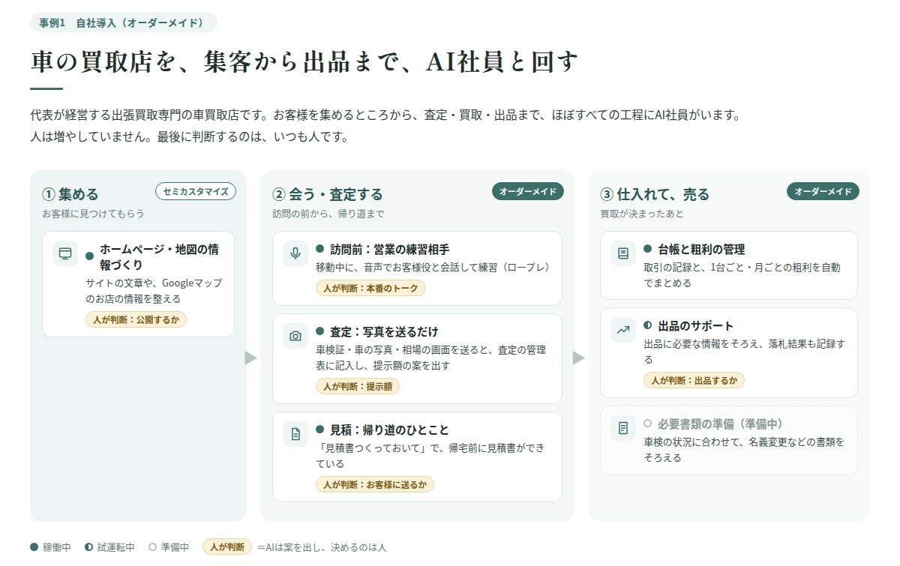
自社で運用中・販売はしていません
潮流を読み、海流を捉え、ソナーでクジラを探す。
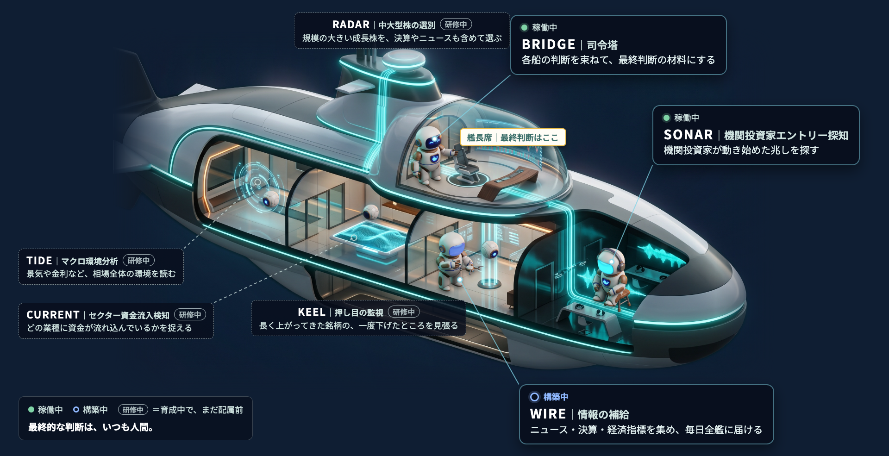
自社運用のみ・投資助言は行いません。
伊原 敏明（いはら としあき）MARQIA 代表 AI導入コンサルタント
ベンチャーキャピタル、エンタメ事業会社での新規事業開発、AIスタートアップ共同創業、SaaS系上場企業の経営企画室を経験。
現在は出張専門の中古車買取店を経営。
米国株のトレードAI「WAKE」を開発したのが、MARQIA（マルキア）の始まり。
早稲田大学大学院理工学研究科修了（専門：生化学）。茨城県在住。
※WAKEは自社専用で、販売・投資助言は行っていません。